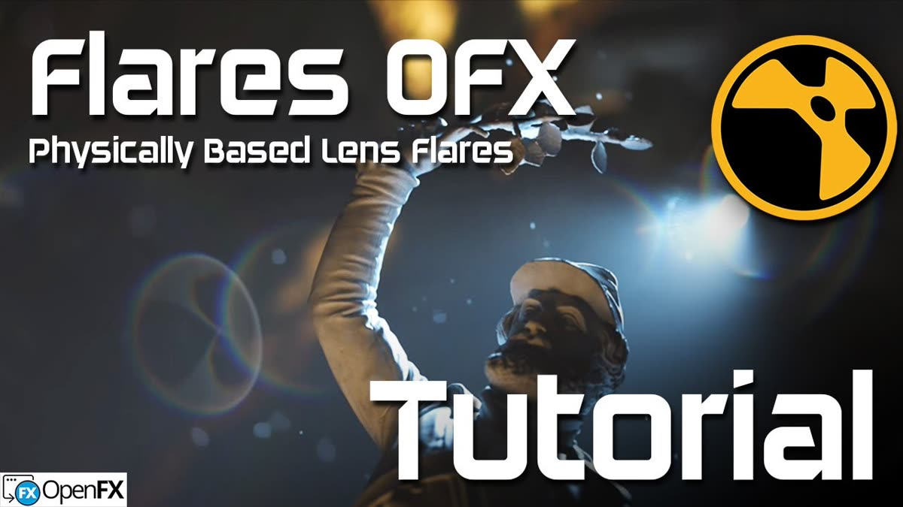
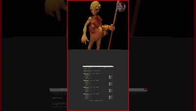

レンズフレア用のOpenFXプラグイン「Flares OFX」をNukeで使う方法の解説。DaVinci Resolve、Fusion、Natronでも動作する。
URL
https://www.youtube.com/watch?v=AYrt8cvCMSY

レンズフレア用のOpenFXプラグイン「Flares OFX」をNukeで使う方法の解説。DaVinci Resolve、Fusion、Natronでも動作する。

